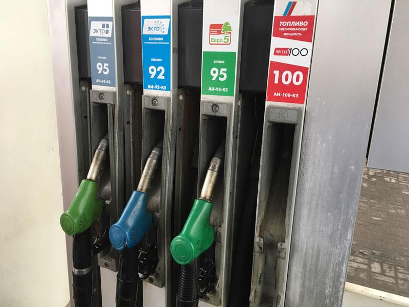

BBC News , Русская служба Перейти к содержанию Разделы Главная Коронавирус Выборы в США Истории Видео Фильмы Подкасты Главная Коронавирус Выборы в США Истории Видео Фильмы Подкасты
Акция протеста: в США взлетели цены на бензин Лукойла
13 сентября 2012 Подпись к фото,Цены на автозаправках Лукойла шокировали автомобилистов
Автомобилисты в американских штатах Нью-Джерси и Пенсильвания, которые привыкли заправляться на АЗС Лукойл , в среду были шокированы: цены на горючее неожиданно взлетели в 2-2,5 раза.
Причиной резкого повышения стоимости топлива - до восьми и даже на некоторых заправках до 10 долларов за галлон (примерно 3,79 литра) - стала однодневная акция протеста, которую устроили владельцы автозаправочных станций, работающих под маркой российской нефтяной компании.
Они выражают недовольство торговой политикой компании Lukoil North America - дочернего предприятия ОАО Лукойл , которая, по мнению дилеров, регулярно и без видимых на то причин завышает отпускные цены на топливо, тем самым ставя их на грань разорения.
Организаторы акции раздавали обескураженным водителям листовки с разъяснениями, почему в этот день бензин стоит так дорого.
Мы устали от несправедливого ценообразования Лукойла , - объясняет владелец автозаправки в Нью-Джерси Амир Крэфф. - Такая нечестная ценовая политика бьет по нашим клиентам .
Оптовые выше розничных
Крэфф и другие бизнесмены, работающие с Лукойлом , утверждают, что они вынуждены закупать бензин по ценам на 10-20 центов за галлон выше, чем их конкуренты.
Кей Кезбэри, который владеет автозаправкой в Маунт-Лореле, Нью-Джерси, продает бензин за 3,79 доллара за галлон - это всего на 4 цента выше оптовых цен Лукойла и на 14 центов выше, чем на соседних заправках.
По его словам, раньше он продавал 300-400 тысяч галлонов в месяц, сейчас же - не более 150 тысяч.
В знак протеста Кезбэри вывесил символический ценник на бензин - 9,99 долларов за галлон. Понятно, что никто по такой цене заправляться не станет.
Хотя, как говорит хозяин, некоторые постоянные клиенты все же покупают несколько литров - в знак солидарности с протестующими.
По данным Ассоциации автомобилистов и владельцев автомагазинов и автозаправок Нью-Джерси (NJGCA), которая организовала протестную акцию, в ней приняли участие 57 автозаправочных станций: 30 в Нью-Джерси и 27 в Пенсильвании.
В свою очередь, вице-президент Lukoil North America Майкл Льюис заявил, что его компания не нарушает законов США, и выступил с осуждением организаторов акции.
Мы глубоко сожалеем, что NJGCA, торговый лоббист, вместо того чтобы участвовать в конструктивном диалоге, поощряет ложные публичные заявления и непродуманные действия, которые вредят потребителям , - заявил Майкл Льюис на официальном сайте дочки российского Лукойла .
Lukoil North America владеет сетью из 500 автозаправочных станций по всей Америке.
Новости по теме
Главное
Обострение в Нагорном Карабахе: Армения призывает удержать Турцию от вмешательства
28 минут назадLIVE Live, 50-й день протеста. В Беларуси снова демонстрации после инаугурации Лукашенко
Наследие Трампа. Стала ли Америка снова великой?
8 часов назадЖурнал
Какого хрена вы покидаете Беларусь? Кто и почему ищет убежище в Польше
25 сентября 2020ФСИН дала мне возможность посмотреть Россию . Иван Асташин - о девяти годах в российских тюрьмах
26 сентября 2020Дзухатсу: люди, пропавшие без следа. И те, кто им помогает исчезнуть
26 сентября 2020Автопробегом по противникам Трампа. Как приверженцы президента США поддерживают его назло соседям
25 сентября 2020Чисто английское меню. Линкольншир: фаршированный хребет и деликатесная водоросль
26 сентября 2020Полгода пандемии Covid-19. Коллективный иммунитет недостижим? А вакцина?
23 сентября 2020Пал Андреич, вы шпион? Как нас выдают движения и жесты
26 сентября 2020Отравление Навального и отношения России и Германии. Что изменится?
23 сентября 2020Ржавчина из крана и стрельба по облакам. Куда делась вода в Крыму?
22 сентября 2020Самое популярное
1 Обострение в Нагорном Карабахе: Армения призывает удержать Турцию от вмешательства 2 Дзухатсу: люди, пропавшие без следа. И те, кто им помогает исчезнуть 3 Наследие Трампа. Стала ли Америка снова великой? 4 Он же никто, просто ребенок, который ушел в лес : как искали Влада Бахова 5 Крушение Ан-26 под Харьковом: 26 погибших, умер один из двух выживших курсантов 6 В Москве вводят ограничения из-за Covid-19. Число заражений резко подскочило 7 Кто такая Эми Барретт, которую Трамп выдвинул в Верховный суд? 8 Брекзит-швекзит. Швейцарцы решают, не запретить ли свободный въезд гражданам ЕС 9 Зачем в Азербайджане вызвали на сборы уволенных в запас? 10 Научный дайджест. Лишние годы - не в нагрузку, а в удовольствие BBC News , Русская служба Почему BBC News заслуживает доверия Правила использования О Би-би-си Личные данные Куки Связаться с Би-би-си AdChoices / Do Not Sell My Info© 2020 BBC. Би-би-си не несет ответственности за содержание других сайтов. Познакомьтесь с нашими правилами внешних ссылок.
